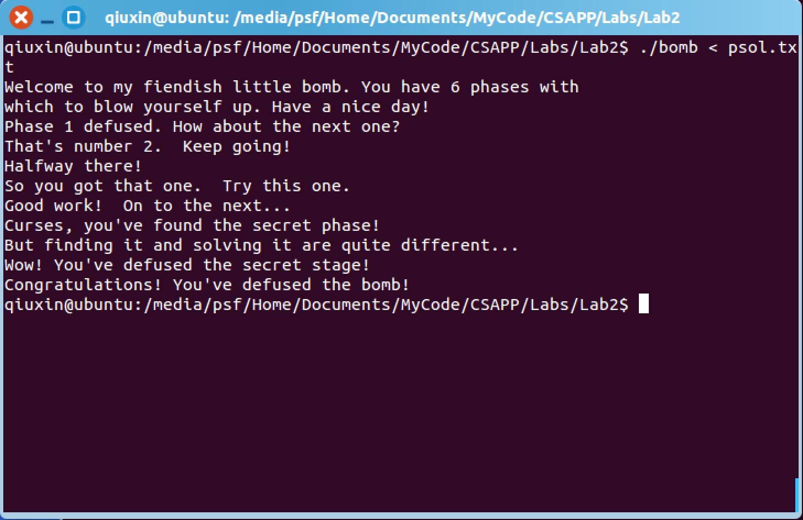

CSAPP Lab2 解题分析

Lab2 的 Bomb是个非常有意思的实验，比起之前耗脑的Lab1，这个Lab主要是学习反汇编。
这里我的环境是OS X EI Capitan，Lab2是[Updated 1/12/16].
Phase1
在Mac上是默认没有GDB的，可以使用LLDB来代替。
进入lldb
lldb bomb
使用disassemble进行反汇编,参考bomb.c文件，可以知道主要的几个函数名。
首先是Phase_1
(lldb) disas -n phase_1
得到以下汇编代码
bomb`phase_1:
bomb[0x400ee0] <+0>: subq $0x8, %rsp
bomb[0x400ee4] <+4>: movl $0x402400, %esi
bomb[0x400ee9] <+9>: callq 0x401338 ; strings_not_equal
bomb[0x400eee] <+14>: testl %eax, %eax
bomb[0x400ef0] <+16>: je 0x400ef7 ; <+23>
bomb[0x400ef2] <+18>: callq 0x40143a ; explode_bomb
bomb[0x400ef7] <+23>: addq $0x8, %rsp
bomb[0x400efb] <+27>: retq
这段代码还是挺好理解的，保存Stack pointer,将$0x402400传给%esi,调用位于0x401338的strings_not_equal函数，比较%eax是否为0，不为零则调用explode_bomb函数，为零则返回。
所以关键要找出字符串是什么。根据上述的汇编代码，可以发现字符串被保存在0x402400这个内存里，所以使用x/s来查看。
(lldb) x/s 0x402400
得到
0x00402400: "Border relations with Canada have never been better."
所以第一关的答案是Strings_Not_Equal
Phase2
同样，还是先反汇编出代码
bomb`phase_2:
bomb[0x400efc] <+0>: pushq %rbp
bomb[0x400efd] <+1>: pushq %rbx
bomb[0x400efe] <+2>: subq $0x28, %rsp
bomb[0x400f02] <+6>: movq %rsp, %rsi
bomb[0x400f05] <+9>: callq 0x40145c ; read_six_numbers
bomb[0x400f0a] <+14>: cmpl $0x1, (%rsp)
bomb[0x400f0e] <+18>: je 0x400f30 ; <+52>
bomb[0x400f10] <+20>: callq 0x40143a ; explode_bomb
bomb[0x400f15] <+25>: jmp 0x400f30 ; <+52>
bomb[0x400f17] <+27>: movl -0x4(%rbx), %eax
bomb[0x400f1a] <+30>: addl %eax, %eax
bomb[0x400f1c] <+32>: cmpl %eax, (%rbx)
bomb[0x400f1e] <+34>: je 0x400f25 ; <+41>
bomb[0x400f20] <+36>: callq 0x40143a ; explode_bomb
bomb[0x400f25] <+41>: addq $0x4, %rbx
bomb[0x400f29] <+45>: cmpq %rbp, %rbx
bomb[0x400f2c] <+48>: jne 0x400f17 ; <+27>
bomb[0x400f2e] <+50>: jmp 0x400f3c ; <+64>
bomb[0x400f30] <+52>: leaq 0x4(%rsp), %rbx
bomb[0x400f35] <+57>: leaq 0x18(%rsp), %rbp
bomb[0x400f3a] <+62>: jmp 0x400f17 ; <+27>
bomb[0x400f3c] <+64>: addq $0x28, %rsp
bomb[0x400f40] <+68>: popq %rbx
bomb[0x400f41] <+69>: popq %rbp
bomb[0x400f42] <+70>: retq
从上述汇编中，可以发现从%rsp位置开始保存数字。
反汇编read_six_numbers得到
bomb`read_six_numbers:
bomb[0x40145c] <+0>: subq $0x18, %rsp
bomb[0x401460] <+4>: movq %rsi, %rdx
bomb[0x401463] <+7>: leaq 0x4(%rsi), %rcx
bomb[0x401467] <+11>: leaq 0x14(%rsi), %rax
bomb[0x40146b] <+15>: movq %rax, 0x8(%rsp)
bomb[0x401470] <+20>: leaq 0x10(%rsi), %rax
bomb[0x401474] <+24>: movq %rax, (%rsp)
bomb[0x401478] <+28>: leaq 0xc(%rsi), %r9
bomb[0x40147c] <+32>: leaq 0x8(%rsi), %r8
bomb[0x401480] <+36>: movl $0x4025c3, %esi
bomb[0x401485] <+41>: movl $0x0, %eax
bomb[0x40148a] <+46>: callq 0x400bf0 ; symbol stub for: __isoc99_sscanf
bomb[0x40148f] <+51>: cmpl $0x5, %eax
bomb[0x401492] <+54>: jg 0x401499 ; <+61>
bomb[0x401494] <+56>: callq 0x40143a ; explode_bomb
bomb[0x401499] <+61>: addq $0x18, %rsp
bomb[0x40149d] <+65>: retq
根据Phase1,很敏感的会发现movl $0x4025c3, %esi这行。通过之前一样的方法，得到0x4025c3内存里的字符串，
0x004025c3: "%d %d %d %d %d %d"
再根据bomb[0x40148a] <+46>: callq 0x400bf0 ; symbol stub for: __isoc99_sscanf这句，猜一下，立马就能联想到scanf("%d %d %d %d %d %d",a,b,c,d,e,f);，也就是说，输入的格式已经确定了。
bomb[0x40145c] <+0>: subq $0x18, %rsp这行也暗示了之前bomb[0x400f35] <+57>: leaq 0x18(%rsp), %rbp为什么是0x18(%rsp)。
回到phase_2，根据cmpl $0x1, (%rsp)和下一行汇编语句，很容易知道第一个数是1.
接着跳到了<+52>,将0x4(%rsp)指向内存里的值传给%rbx,将0x18(%rsp)指向内存里的值传给%rbp。
bomb[0x400f17] <+27>: movl -0x4(%rbx), %eax
bomb[0x400f1a] <+30>: addl %eax, %eax
bomb[0x400f1c] <+32>: cmpl %eax, (%rbx)
bomb[0x400f1e] <+34>: je 0x400f25
这段代码是循环里的部分
bomb[0x400f25] <+41>: addq $0x4, %rbx
bomb[0x400f29] <+45>: cmpq %rbp, %rbx
bomb[0x400f2c] <+48>: jne 0x400f17 ; <+27>
bomb[0x400f2e] <+50>: jmp 0x400f3c ; <+64>
这是循环条件
所以可以得出这6个数是等比数列1 2 4 8 16 32
Phase3
bomb`phase_3:
bomb[0x400f43] <+0>: subq $0x18, %rsp
bomb[0x400f47] <+4>: leaq 0xc(%rsp), %rcx
bomb[0x400f4c] <+9>: leaq 0x8(%rsp), %rdx
bomb[0x400f51] <+14>: movl $0x4025cf, %esi
bomb[0x400f56] <+19>: movl $0x0, %eax
bomb[0x400f5b] <+24>: callq 0x400bf0 ; symbol stub for: __isoc99_sscanf
bomb[0x400f60] <+29>: cmpl $0x1, %eax
bomb[0x400f63] <+32>: jg 0x400f6a ; <+39>
bomb[0x400f65] <+34>: callq 0x40143a ; explode_bomb
bomb[0x400f6a] <+39>: cmpl $0x7, 0x8(%rsp)
bomb[0x400f6f] <+44>: ja 0x400fad ; <+106>
bomb[0x400f71] <+46>: movl 0x8(%rsp), %eax
bomb[0x400f75] <+50>: jmpq *0x402470(,%rax,8)
bomb[0x400f7c] <+57>: movl $0xcf, %eax
bomb[0x400f81] <+62>: jmp 0x400fbe ; <+123>
bomb[0x400f83] <+64>: movl $0x2c3, %eax
bomb[0x400f88] <+69>: jmp 0x400fbe ; <+123>
bomb[0x400f8a] <+71>: movl $0x100, %eax
bomb[0x400f8f] <+76>: jmp 0x400fbe ; <+123>
bomb[0x400f91] <+78>: movl $0x185, %eax
bomb[0x400f96] <+83>: jmp 0x400fbe ; <+123>
bomb[0x400f98] <+85>: movl $0xce, %eax
bomb[0x400f9d] <+90>: jmp 0x400fbe ; <+123>
bomb[0x400f9f] <+92>: movl $0x2aa, %eax
bomb[0x400fa4] <+97>: jmp 0x400fbe ; <+123>
bomb[0x400fa6] <+99>: movl $0x147, %eax
bomb[0x400fab] <+104>: jmp 0x400fbe ; <+123>
bomb[0x400fad] <+106>: callq 0x40143a ; explode_bomb
bomb[0x400fb2] <+111>: movl $0x0, %eax
bomb[0x400fb7] <+116>: jmp 0x400fbe ; <+123>
bomb[0x400fb9] <+118>: movl $0x137, %eax
bomb[0x400fbe] <+123>: cmpl 0xc(%rsp), %eax
bomb[0x400fc2] <+127>: je 0x400fc9 ; <+134>
bomb[0x400fc4] <+129>: callq 0x40143a ; explode_bomb
bomb[0x400fc9] <+134>: addq $0x18, %rsp
bomb[0x400fcd] <+138>: retq
代码还挺长。
同样，根据bomb[0x400f51] <+14>: movl $0x4025cf, %esi可以得到%d %d这个格式，代表要输入两个整数。
bomb[0x400f47] <+4>: leaq 0xc(%rsp), %rcx
bomb[0x400f4c] <+9>: leaq 0x8(%rsp), %rdx
这两行代表了两个数存的位置。
bomb[0x400f6a] <+39>: cmpl $0x7, 0x8(%rsp)
bomb[0x400f6f] <+44>: ja 0x400fad ; <+106>
由这两行，可知第一个数要不能大于7,ja是unsigned >，所以第一个数还要是正数。
关键的一行是这个bomb[0x400f75] <+50>: jmpq *0x402470(,%rax,8),这是一个switch跳转语句，跳转到0x402470+ %rax * 8的位置。使用p/x来确定跳转的目的地址。
(gdb) p/x *(0x402470)
$1 = 0x400f7c
(gdb) p/x *(0x402470+8)
$2 = 0x400fb9
(gdb) p/x *(0x402470+16)
$3 = 0x400f83
(gdb) p/x *(0x402470+24)
$4 = 0x400f8a
(gdb) p/x *(0x402470+32)
$5 = 0x400f91
(gdb) p/x *(0x402470+40)
$6 = 0x400f98
(gdb) p/x *(0x402470+48)
$7 = 0x400f9f
(gdb) p/x *(0x402470+56)
$8 = 0x400fa6
通过这个跳转表，可得得到8个解
0 207
1 311
2 707
3 256
4 389
5 206
6 682
7 327
Phase4
bomb`phase_4:
bomb[0x40100c] <+0>: subq $0x18, %rsp
bomb[0x401010] <+4>: leaq 0xc(%rsp), %rcx
bomb[0x401015] <+9>: leaq 0x8(%rsp), %rdx
bomb[0x40101a] <+14>: movl $0x4025cf, %esi
bomb[0x40101f] <+19>: movl $0x0, %eax
bomb[0x401024] <+24>: callq 0x400bf0 ; symbol stub for: __isoc99_sscanf
bomb[0x401029] <+29>: cmpl $0x2, %eax
bomb[0x40102c] <+32>: jne 0x401035 ; <+41>
bomb[0x40102e] <+34>: cmpl $0xe, 0x8(%rsp)
bomb[0x401033] <+39>: jbe 0x40103a ; <+46>
bomb[0x401035] <+41>: callq 0x40143a ; explode_bomb
bomb[0x40103a] <+46>: movl $0xe, %edx
bomb[0x40103f] <+51>: movl $0x0, %esi
bomb[0x401044] <+56>: movl 0x8(%rsp), %edi
bomb[0x401048] <+60>: callq 0x400fce ; func4
bomb[0x40104d] <+65>: testl %eax, %eax
bomb[0x40104f] <+67>: jne 0x401058 ; <+76>
bomb[0x401051] <+69>: cmpl $0x0, 0xc(%rsp)
bomb[0x401056] <+74>: je 0x40105d ; <+81>
bomb[0x401058] <+76>: callq 0x40143a ; explode_bomb
bomb[0x40105d] <+81>: addq $0x18, %rsp
bomb[0x401061] <+85>: retq
同样的方式，可以确定第一个整数小于等于14，第二个数为0。
第一个数具体值，需要执行func4。
所以func4的代码
bomb`func4:
bomb[0x400fce] <+0>: subq $0x8, %rsp
bomb[0x400fd2] <+4>: movl %edx, %eax
bomb[0x400fd4] <+6>: subl %esi, %eax
bomb[0x400fd6] <+8>: movl %eax, %ecx
bomb[0x400fd8] <+10>: shrl $0x1f, %ecx
bomb[0x400fdb] <+13>: addl %ecx, %eax
bomb[0x400fdd] <+15>: sarl %eax
bomb[0x400fdf] <+17>: leal (%rax,%rsi), %ecx
bomb[0x400fe2] <+20>: cmpl %edi, %ecx
bomb[0x400fe4] <+22>: jle 0x400ff2 ; <+36>
bomb[0x400fe6] <+24>: leal -0x1(%rcx), %edx
bomb[0x400fe9] <+27>: callq 0x400fce ; <+0>
bomb[0x400fee] <+32>: addl %eax, %eax
bomb[0x400ff0] <+34>: jmp 0x401007 ; <+57>
bomb[0x400ff2] <+36>: movl $0x0, %eax
bomb[0x400ff7] <+41>: cmpl %edi, %ecx
bomb[0x400ff9] <+43>: jge 0x401007 ; <+57>
bomb[0x400ffb] <+45>: leal 0x1(%rcx), %esi
bomb[0x400ffe] <+48>: callq 0x400fce ; <+0>
bomb[0x401003] <+53>: leal 0x1(%rax,%rax), %eax
bomb[0x401007] <+57>: addq $0x8, %rsp
bomb[0x40100b] <+61>: retq
仔细看会发现<+20>和<+41>是一样的，而他们的下一行判断正好相反。注意<+24>和<+45>,以及他们的下一行，都很类似。其实就是递归逼近答案。
好吧，随便带入一个0,结果发现正好就正确了。所以输入0 0。倒是测试了一下，发现输入1 0或者3 0或者7 0都正确，果然func4还要细看。只能带入func4慢慢推导，这里就不细写了。
Phase5
bomb`phase_5:
bomb[0x401062] <+0>: pushq %rbx
bomb[0x401063] <+1>: subq $0x20, %rsp
bomb[0x401067] <+5>: movq %rdi, %rbx
bomb[0x40106a] <+8>: movq %fs:0x28, %rax
bomb[0x401073] <+17>: movq %rax, 0x18(%rsp)
bomb[0x401078] <+22>: xorl %eax, %eax
bomb[0x40107a] <+24>: callq 0x40131b ; string_length
bomb[0x40107f] <+29>: cmpl $0x6, %eax
bomb[0x401082] <+32>: je 0x4010d2 ; <+112>
bomb[0x401084] <+34>: callq 0x40143a ; explode_bomb
bomb[0x401089] <+39>: jmp 0x4010d2 ; <+112>
bomb[0x40108b] <+41>: movzbl (%rbx,%rax), %ecx
bomb[0x40108f] <+45>: movb %cl, (%rsp)
bomb[0x401092] <+48>: movq (%rsp), %rdx
bomb[0x401096] <+52>: andl $0xf, %edx
bomb[0x401099] <+55>: movzbl 0x4024b0(%rdx), %edx
bomb[0x4010a0] <+62>: movb %dl, 0x10(%rsp,%rax)
bomb[0x4010a4] <+66>: addq $0x1, %rax
bomb[0x4010a8] <+70>: cmpq $0x6, %rax
bomb[0x4010ac] <+74>: jne 0x40108b ; <+41>
bomb[0x4010ae] <+76>: movb $0x0, 0x16(%rsp)
bomb[0x4010b3] <+81>: movl $0x40245e, %esi
bomb[0x4010b8] <+86>: leaq 0x10(%rsp), %rdi
bomb[0x4010bd] <+91>: callq 0x401338 ; strings_not_equal
bomb[0x4010c2] <+96>: testl %eax, %eax
bomb[0x4010c4] <+98>: je 0x4010d9 ; <+119>
bomb[0x4010c6] <+100>: callq 0x40143a ; explode_bomb
bomb[0x4010cb] <+105>: nopl (%rax,%rax)
bomb[0x4010d0] <+110>: jmp 0x4010d9 ; <+119>
bomb[0x4010d2] <+112>: movl $0x0, %eax
bomb[0x4010d7] <+117>: jmp 0x40108b ; <+41>
bomb[0x4010d9] <+119>: movq 0x18(%rsp), %rax
bomb[0x4010de] <+124>: xorq %fs:0x28, %rax
bomb[0x4010e7] <+133>: je 0x4010ee ; <+140>
bomb[0x4010e9] <+135>: callq 0x400b30 ; symbol stub for: __stack_chk_fail
bomb[0x4010ee] <+140>: addq $0x20, %rsp
bomb[0x4010f2] <+144>: popq %rbx
bomb[0x4010f3] <+145>: retq
这道题挺让人头大的，只能参考一些资料。这里用到了一个逆向工具——radare2。
r2 bomb
进入radare2
首先执行aaa来初始化。
afl是用来标示函数的， 所以使用afl~phase来寻找反汇编中的phase，得到
[0x00400c90]> afl~phase
0x004015c4 149 8 sym.phase_defused
0x00401062 146 9 sym.phase_5
0x00400f43 139 8 sym.phase_3
0x00400ee0 28 3 sym.phase_1
0x004012f6 37 1 sym.invalid_phase
0x00401242 81 5 sym.secret_phase
0x0040100c 86 7 sym.phase_4
0x004010f4 272 26 sym.phase_6
0x00400efc 71 8 sym.phase_2
使用seek来选择函数,pdf来打印反汇编的函数:
[0x00400c90]> s sym.phase_5
[0x00401062]> pdf
/ (fcn) sym.phase_5 146
| ; CALL XREF from 0x00400eaa (sym.phase_5)
| 0x00401062 53 push rbx
| 0x00401063 4883ec20 sub rsp, 0x20
| 0x00401067 4889fb mov rbx, rdi
| 0x0040106a 64488b042528. mov rax, qword fs:[0x28] ; [0x28:8]=0x48b8 ; '('
| 0x00401073 4889442418 mov qword [rsp + 0x18], rax
| 0x00401078 31c0 xor eax, eax
| 0x0040107a e89c020000 call sym.string_length
| 0x0040107f 83f806 cmp eax, 6
| ,=< 0x00401082 744e je 0x4010d2
| | 0x00401084 e8b1030000 call sym.explode_bomb
| ,==< 0x00401089 eb47 jmp 0x4010d2
| || ; JMP XREF from 0x004010d7 (sym.phase_5)
| || ; JMP XREF from 0x004010ac (sym.phase_5)
| ..---> 0x0040108b 0fb60c03 movzx ecx, byte [rbx + rax]
| |||| 0x0040108f 880c24 mov byte [rsp], cl
| |||| 0x00401092 488b1424 mov rdx, qword [rsp]
| |||| 0x00401096 83e20f and edx, 0xf
| |||| 0x00401099 0fb692b02440. movzx edx, byte [rdx + str.maduiersnfotvbylSo_you_think_you_can_stop_the_bomb_with_ctrl_c__do_you_] ; [0x4024b0:1]=109 LEA obj.array.3449 ; "maduiersnfotvbylSo you think you can stop the bomb with ctrl-c, do you?" @ 0x4024b0
| |||| 0x004010a0 88540410 mov byte [rsp + rax + 0x10], dl
| |||| 0x004010a4 4883c001 add rax, 1
| |||| 0x004010a8 4883f806 cmp rax, 6
| `====< 0x004010ac 75dd jne 0x40108b
| ||| 0x004010ae c644241600 mov byte [rsp + 0x16], 0
| ||| 0x004010b3 be5e244000 mov esi, str.flyers ; "flyers" @ 0x40245e
| ||| 0x004010b8 488d7c2410 lea rdi, [rsp + 0x10] ; 0x10
| ||| 0x004010bd e876020000 call sym.strings_not_equal
| ||| 0x004010c2 85c0 test eax, eax
| ,====< 0x004010c4 7413 je 0x4010d9
| |||| 0x004010c6 e86f030000 call sym.explode_bomb
| |||| 0x004010cb 0f1f440000 nop dword [rax + rax]
| ,=====< 0x004010d0 eb07 jmp 0x4010d9
| ||||| ; JMP XREF from 0x00401089 (sym.phase_5)
| ||||| ; JMP XREF from 0x00401082 (sym.phase_5)
| |||``-> 0x004010d2 b800000000 mov eax, 0
| ||`===< 0x004010d7 ebb2 jmp 0x40108b
| || ; JMP XREF from 0x004010d0 (sym.phase_5)
| || ; JMP XREF from 0x004010c4 (sym.phase_5)
| ``----> 0x004010d9 488b442418 mov rax, qword [rsp + 0x18] ; [0x18:8]=0x400c90 section..text
| 0x004010de 644833042528. xor rax, qword fs:[0x28]
| ,=< 0x004010e7 7405 je 0x4010ee
| | 0x004010e9 e842faffff call sym.imp.__stack_chk_fail
| | ; JMP XREF from 0x004010e7 (sym.phase_5)
| `-> 0x004010ee 4883c420 add rsp, 0x20
| 0x004010f2 5b pop rbx
\ 0x004010f3 c3 ret
[0x00401062]>
这题要求输入一个长度为6的字符串，经过一定的变换要得到0x40245e指向的字符串flyers。通过上述的代码，会敏感的发现待转换的字符串在obj.array.3449中，使用如下代码来找到偏移量
[0x00401062]> px 16@obj.array.3449
- offset - 0 1 2 3 4 5 6 7 8 9 A B C D E F 0123456789ABCDEF
0x004024b0 6d61 6475 6965 7273 6e66 6f74 7662 796c maduiersnfotvbyl
上面的一个偏移量对应下面的2个字符。
下面将flyers转化为十六进制ascii
[0x00401062]> !rax2 -S flyers
666c79657273
得到的666c79657273两个一组，找对应的上面的偏移量，可以得到偏移量list[9, 0xF, 0xE, 5, 6, 7]
使用python来计算出结果
off = [9, 0xF, 0xE, 5, 6, 7]
result = ""
for c in off:
result += chr(c + 64)
print result
所以这题的答案是IONEFG
Phase6
bomb`phase_6:
bomb[0x4010f4] <+0>: pushq %r14
bomb[0x4010f6] <+2>: pushq %r13
bomb[0x4010f8] <+4>: pushq %r12
bomb[0x4010fa] <+6>: pushq %rbp
bomb[0x4010fb] <+7>: pushq %rbx
bomb[0x4010fc] <+8>: subq $0x50, %rsp
bomb[0x401100] <+12>: movq %rsp, %r13
bomb[0x401103] <+15>: movq %rsp, %rsi
bomb[0x401106] <+18>: callq 0x40145c ; read_six_numbers
bomb[0x40110b] <+23>: movq %rsp, %r14
bomb[0x40110e] <+26>: movl $0x0, %r12d
bomb[0x401114] <+32>: movq %r13, %rbp
bomb[0x401117] <+35>: movl (%r13), %eax
bomb[0x40111b] <+39>: subl $0x1, %eax
bomb[0x40111e] <+42>: cmpl $0x5, %eax
bomb[0x401121] <+45>: jbe 0x401128 ; <+52>
bomb[0x401123] <+47>: callq 0x40143a ; explode_bomb
bomb[0x401128] <+52>: addl $0x1, %r12d
bomb[0x40112c] <+56>: cmpl $0x6, %r12d
bomb[0x401130] <+60>: je 0x401153 ; <+95>
bomb[0x401132] <+62>: movl %r12d, %ebx
bomb[0x401135] <+65>: movslq %ebx, %rax
bomb[0x401138] <+68>: movl (%rsp,%rax,4), %eax
bomb[0x40113b] <+71>: cmpl %eax, (%rbp)
bomb[0x40113e] <+74>: jne 0x401145 ; <+81>
bomb[0x401140] <+76>: callq 0x40143a ; explode_bomb
bomb[0x401145] <+81>: addl $0x1, %ebx
bomb[0x401148] <+84>: cmpl $0x5, %ebx
bomb[0x40114b] <+87>: jle 0x401135 ; <+65>
bomb[0x40114d] <+89>: addq $0x4, %r13
bomb[0x401151] <+93>: jmp 0x401114 ; <+32>
bomb[0x401153] <+95>: leaq 0x18(%rsp), %rsi
bomb[0x401158] <+100>: movq %r14, %rax
bomb[0x40115b] <+103>: movl $0x7, %ecx
bomb[0x401160] <+108>: movl %ecx, %edx
bomb[0x401162] <+110>: subl (%rax), %edx
bomb[0x401164] <+112>: movl %edx, (%rax)
bomb[0x401166] <+114>: addq $0x4, %rax
bomb[0x40116a] <+118>: cmpq %rsi, %rax
bomb[0x40116d] <+121>: jne 0x401160 ; <+108>
bomb[0x40116f] <+123>: movl $0x0, %esi
bomb[0x401174] <+128>: jmp 0x401197 ; <+163>
bomb[0x401176] <+130>: movq 0x8(%rdx), %rdx
bomb[0x40117a] <+134>: addl $0x1, %eax
bomb[0x40117d] <+137>: cmpl %ecx, %eax
bomb[0x40117f] <+139>: jne 0x401176 ; <+130>
bomb[0x401181] <+141>: jmp 0x401188 ; <+148>
bomb[0x401183] <+143>: movl $0x6032d0, %edx
bomb[0x401188] <+148>: movq %rdx, 0x20(%rsp,%rsi,2)
bomb[0x40118d] <+153>: addq $0x4, %rsi
bomb[0x401191] <+157>: cmpq $0x18, %rsi
bomb[0x401195] <+161>: je 0x4011ab ; <+183>
bomb[0x401197] <+163>: movl (%rsp,%rsi), %ecx
bomb[0x40119a] <+166>: cmpl $0x1, %ecx
bomb[0x40119d] <+169>: jle 0x401183 ; <+143>
bomb[0x40119f] <+171>: movl $0x1, %eax
bomb[0x4011a4] <+176>: movl $0x6032d0, %edx
bomb[0x4011a9] <+181>: jmp 0x401176 ; <+130>
bomb[0x4011ab] <+183>: movq 0x20(%rsp), %rbx
bomb[0x4011b0] <+188>: leaq 0x28(%rsp), %rax
bomb[0x4011b5] <+193>: leaq 0x50(%rsp), %rsi
bomb[0x4011ba] <+198>: movq %rbx, %rcx
bomb[0x4011bd] <+201>: movq (%rax), %rdx
bomb[0x4011c0] <+204>: movq %rdx, 0x8(%rcx)
bomb[0x4011c4] <+208>: addq $0x8, %rax
bomb[0x4011c8] <+212>: cmpq %rsi, %rax
bomb[0x4011cb] <+215>: je 0x4011d2 ; <+222>
bomb[0x4011cd] <+217>: movq %rdx, %rcx
bomb[0x4011d0] <+220>: jmp 0x4011bd ; <+201>
bomb[0x4011d2] <+222>: movq $0x0, 0x8(%rdx)
bomb[0x4011da] <+230>: movl $0x5, %ebp
bomb[0x4011df] <+235>: movq 0x8(%rbx), %rax
bomb[0x4011e3] <+239>: movl (%rax), %eax
bomb[0x4011e5] <+241>: cmpl %eax, (%rbx)
bomb[0x4011e7] <+243>: jge 0x4011ee ; <+250>
bomb[0x4011e9] <+245>: callq 0x40143a ; explode_bomb
bomb[0x4011ee] <+250>: movq 0x8(%rbx), %rbx
bomb[0x4011f2] <+254>: subl $0x1, %ebp
bomb[0x4011f5] <+257>: jne 0x4011df ; <+235>
bomb[0x4011f7] <+259>: addq $0x50, %rsp
bomb[0x4011fb] <+263>: popq %rbx
bomb[0x4011fc] <+264>: popq %rbp
bomb[0x4011fd] <+265>: popq %r12
bomb[0x4011ff] <+267>: popq %r13
bomb[0x401201] <+269>: popq %r14
bomb[0x401203] <+271>: retq
代码虽然很长，其实使用stepi还是挺容易弄懂的。首先读取6个数字，并且各不相同。然后，在0x6032d0位置有一个链表，读取这链表的值。
(gdb)x/32wx 0x6032d0
当然使用radare2很容易发现这里的链表，
[0x004010f4]> pxw 96@obj.node1
0x006032d0 0x0000014c 0x00000001 0x006032e0 0x00000000 L........2`.....
0x006032e0 0x000000a8 0x00000002 0x006032f0 0x00000000 .........2`.....
0x006032f0 0x0000039c 0x00000003 0x00603300 0x00000000 .........3`.....
0x00603300 0x000002b3 0x00000004 0x00603310 0x00000000 .........3`.....
0x00603310 0x000001dd 0x00000005 0x00603320 0x00000000 ........ 3`.....
0x00603320 0x000001bb 0x00000006 0x00000000 0x00000000 ................
另外，对于读入的数，这里存在一个操作
bomb[0x40115b] <+103>: movl $0x7, %ecx
bomb[0x401160] <+108>: movl %ecx, %edx
bomb[0x401162] <+110>: subl (%rax), %edx
是的，用7来减每个数并保存。
在这个地方
bomb[0x4011e5] <+241>: cmpl %eax, (%rbx)
bomb[0x4011e7] <+243>: jge 0x4011ee ; <+250>
这里暗示节点顺序需要时递减。
所以节点重排应该是3 4 5 6 1 2,考虑之前的7减操作，最终的答案是4 3 2 1 6 5
Secret phase
这时候说Congratulations!还稍微早了些，这个还暗藏了一个秘密关卡，藏在了phase_defused中。
首先要在phase_defused函数打断点， 另外反汇编出phase_defused，可以发现
Dump of assembler code for function phase_defused:
0x00000000004015c4 <+0>: sub $0x78,%rsp
0x00000000004015c8 <+4>: mov %fs:0x28,%rax
0x00000000004015d1 <+13>: mov %rax,0x68(%rsp)
0x00000000004015d6 <+18>: xor %eax,%eax
0x00000000004015d8 <+20>: cmpl $0x6,0x202181(%rip) # 0x603760 <num_input_strings>
0x00000000004015df <+27>: jne 0x40163f <phase_defused+123>
0x00000000004015e1 <+29>: lea 0x10(%rsp),%r8
0x00000000004015e6 <+34>: lea 0xc(%rsp),%rcx
0x00000000004015eb <+39>: lea 0x8(%rsp),%rdx
0x00000000004015f0 <+44>: mov $0x402619,%esi
0x00000000004015f5 <+49>: mov $0x603870,%edi
0x00000000004015fa <+54>: callq 0x400bf0 <__isoc99_sscanf@plt>
0x00000000004015ff <+59>: cmp $0x3,%eax
0x0000000000401602 <+62>: jne 0x401635 <phase_defused+113>
0x0000000000401604 <+64>: mov $0x402622,%esi
0x0000000000401609 <+69>: lea 0x10(%rsp),%rdi
0x000000000040160e <+74>: callq 0x401338 <strings_not_equal>
0x0000000000401613 <+79>: test %eax,%eax
0x0000000000401615 <+81>: jne 0x401635 <phase_defused+113>
0x0000000000401617 <+83>: mov $0x4024f8,%edi
0x000000000040161c <+88>: callq 0x400b10 <puts@plt>
0x0000000000401621 <+93>: mov $0x402520,%edi
0x0000000000401626 <+98>: callq 0x400b10 <puts@plt>
0x000000000040162b <+103>: mov $0x0,%eax
0x0000000000401630 <+108>: callq 0x401242 <secret_phase>
0x0000000000401635 <+113>: mov $0x402558,%edi
0x000000000040163a <+118>: callq 0x400b10 <puts@plt>
0x000000000040163f <+123>: mov 0x68(%rsp),%rax
0x0000000000401644 <+128>: xor %fs:0x28,%rax
0x000000000040164d <+137>: je 0x401654 <phase_defused+144>
0x000000000040164f <+139>: callq 0x400b30 <__stack_chk_fail@plt>
0x0000000000401654 <+144>: add $0x78,%rsp
0x0000000000401658 <+148>: retq
其中secret_phase的源码
Dump of assembler code for function secret_phase:
=> 0x0000000000401242 <+0>: push %rbx
0x0000000000401243 <+1>: callq 0x40149e <read_line>
0x0000000000401248 <+6>: mov $0xa,%edx
0x000000000040124d <+11>: mov $0x0,%esi
0x0000000000401252 <+16>: mov %rax,%rdi
0x0000000000401255 <+19>: callq 0x400bd0 <strtol@plt>
0x000000000040125a <+24>: mov %rax,%rbx
0x000000000040125d <+27>: lea -0x1(%rax),%eax
0x0000000000401260 <+30>: cmp $0x3e8,%eax
0x0000000000401265 <+35>: jbe 0x40126c <secret_phase+42>
0x0000000000401267 <+37>: callq 0x40143a <explode_bomb>
0x000000000040126c <+42>: mov %ebx,%esi
0x000000000040126e <+44>: mov $0x6030f0,%edi
0x0000000000401273 <+49>: callq 0x401204 <fun7>
0x0000000000401278 <+54>: cmp $0x2,%eax
0x000000000040127b <+57>: je 0x401282 <secret_phase+64>
0x000000000040127d <+59>: callq 0x40143a <explode_bomb>
0x0000000000401282 <+64>: mov $0x402438,%edi
0x0000000000401287 <+69>: callq 0x400b10 <puts@plt>
0x000000000040128c <+74>: callq 0x4015c4 <phase_defused>
0x0000000000401291 <+79>: pop %rbx
0x0000000000401292 <+80>: retq
其中，fun7的返回值和2进行了比较，相等则正确，所以可以确定fun7一定要返回2。跳转到fun7
bomb`fun7:
bomb[0x401204] <+0>: subq $0x8, %rsp
bomb[0x401208] <+4>: testq %rdi, %rdi
bomb[0x40120b] <+7>: je 0x401238 ; <+52>
bomb[0x40120d] <+9>: movl (%rdi), %edx
bomb[0x40120f] <+11>: cmpl %esi, %edx
bomb[0x401211] <+13>: jle 0x401220 ; <+28>
bomb[0x401213] <+15>: movq 0x8(%rdi), %rdi
bomb[0x401217] <+19>: callq 0x401204 ; <+0>
bomb[0x40121c] <+24>: addl %eax, %eax
bomb[0x40121e] <+26>: jmp 0x40123d ; <+57>
bomb[0x401220] <+28>: movl $0x0, %eax
bomb[0x401225] <+33>: cmpl %esi, %edx
bomb[0x401227] <+35>: je 0x40123d ; <+57>
bomb[0x401229] <+37>: movq 0x10(%rdi), %rdi
bomb[0x40122d] <+41>: callq 0x401204 ; <+0>
bomb[0x401232] <+46>: leal 0x1(%rax,%rax), %eax
bomb[0x401236] <+50>: jmp 0x40123d ; <+57>
bomb[0x401238] <+52>: movl $0xffffffff, %eax
bomb[0x40123d] <+57>: addq $0x8, %rsp
bomb[0x401241] <+61>: retq
可以根据上面的代码，写出C语言的递归函数:
//这里假设%rdi为x, %esi为y
int fun7(int *x, int y)
{
if (x == NULL)
return -1;
int ret = 0;
if (*x - y < 0)
{
ret = fun7(*(x + 0x10), y);
ret = ret * 2 + 1;
}
else if (*x == y)
{
return 0;
}
else
{
ret = fun7(*(x + 0x8), b);
ret *= 2;
}
}
那么，为了让fun7返回得到2，需要执行三次递归。
2 = 2 * 1
1 = 2 * 0 + 1
0 = 0
所以可以得知%rdi也就是0x6030f0这个地址进行了2次增加。递归最深处得到(%rdi)和%rsi相等。用0x6030f0增加(0x8+0x10),得到0x16,转化为十进制就是答案22.

最后
通过不到两天的思考，虽然不是很容易，经过各种查资料和思考，最终完成了这个lab。第三章节的结束，也是第四章的开始，路漫漫其修远兮，吾将上下而求索。